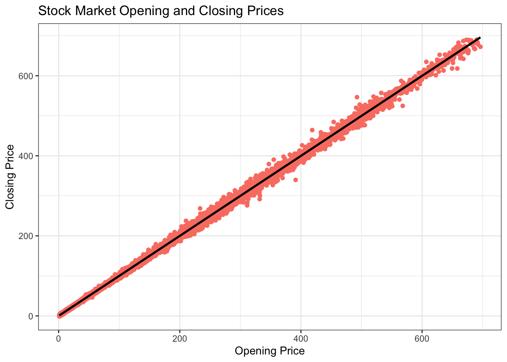
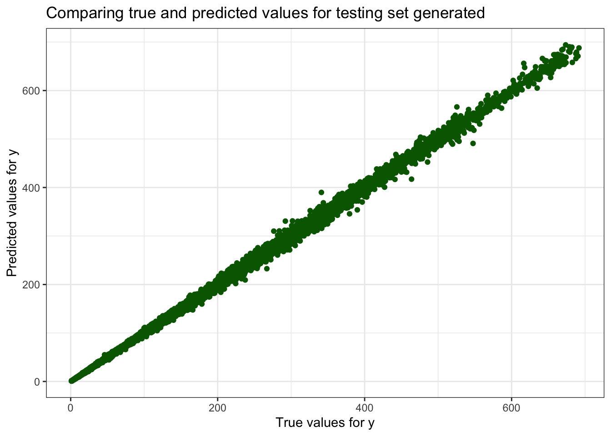
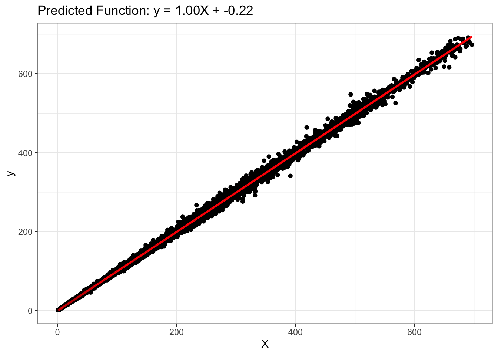
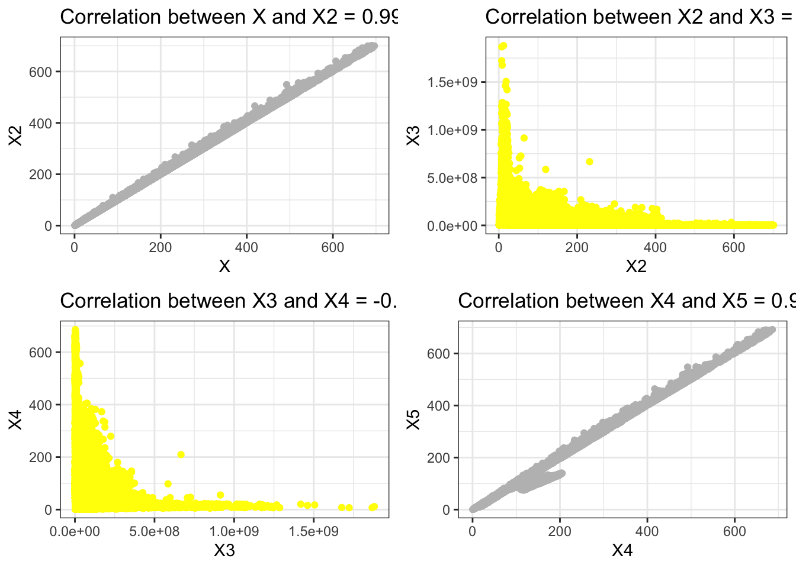

This dataset consists of the daily stock prices and volume of 14 different tech companies, including Apple (AAPL), Amazon (AMZN), Alphabet (GOOGL), and Meta Platforms (META) and more!
Regression is modelling technique which is used to predict the target attributes.
Regression uses the equation \[y = mx + c\] which is linear in nature.
Reading the Dataset
# Reading the CSV filestock_market<-read_csv('big_tech_stock_prices.csv')
Rows: 45088 Columns: 8
── Column specification ────────────────────────────────────────────────────────
Delimiter: ","
chr (2): stock_symbol, date
dbl (6): open, high, low, close, adj_close, volume
ℹ Use `spec()` to retrieve the full column specification for this data.
ℹ Specify the column types or set `show_col_types = FALSE` to quiet this message.
Cleaning the Dataset
# Cleaning the data, dropping NA from datasetstock_market <-drop_na(stock_market)
Synthetic Data Generation
# Parametersseed <-1# seed for random number generationnumInstances <-nrow(stock_market)# Set seedset.seed(seed)# Generate dataX <- stock_market$open # Assigning attribute open to X y_true <- stock_market$close # Assigning attribute close to y_true (as true value)y <- y_true +matrix(rnorm(numInstances), ncol =1) # adding noise to the data# Visualizing the datalibrary(ggplot2) ggplot(stock_market,aes(x = X, y = y)) +geom_point(color ="salmon") +geom_smooth(method ="lm", color ="black", linewidth =1) +ggtitle('Stock Market Opening and Closing Prices') +xlab('Opening Price') +ylab('Closing Price')
`geom_smooth()` using formula = 'y ~ x'

As depicted in the above plot it shows that according to the increase of the opening prices the closing prices are increasing forming a linear relationship.
Multiple Linear Regression
Multiple Linear Regression method is used to generate a model showing the relationship between a dependent variable and two or more independent variables.
Loss Function is given as: \[L(y,f(X,w)) = \sum_{i=1}^N||y_i - X_iw - w_0||^2\]
For the Stock Market Dataset following steps are performed:
Step 1: Split Input Data into Training and Test Sets
# Importing rsample library to perform the split functionlibrary(rsample)# Set a seed for reproducibilityset.seed(123)numInstances <-nrow(stock_market) # number of data instancesnumTrain <-20# number of training instancesnumTest <- numInstances - numTrainstock_tibble <-tibble(X = stock_market$open,y = stock_market$close)# Splitting the data (80% training, 20% testing)split_index <-initial_split(stock_tibble, prop = numTrain/numInstances)# Split the dataset into training and testing setstraining_set <-training(split_index)testing_set <-testing(split_index)# Extract X_train, X_test, y_train, y_testX_train <- training_set$Xy_train <- training_set$yX_test <- testing_set$Xy_test <- testing_set$y
Splitting the Dataset into training and testing sets.
Step 2: Fit Regression Model to Training Set
library(parsnip)# Create a linear regression model specificationlin_reg_spec <-linear_reg() |>set_engine("lm")# Fit the model to the training setlin_reg_fit <- lin_reg_spec |>fit(y ~ X, data = training_set)
After creating a linear regression model and trying to fit the training set considering X as open price and y as closing price.
Step 3: Apply Model to the Test Set
# Apply model to the testing settesting_set_pred <-predict(lin_reg_fit, new_data = testing_set) |>pull(.pred)
After creating the linear regression model, checking the model based on the testing set which shows how generalized the model performs after changing the the data.
Step 4: Evaluate Model Performance on Test Set
# Plotting true vs predicted valuesggplot() +geom_point(aes(x =as.vector(y_test), y = testing_set_pred), color ='darkgreen')+ggtitle('Comparing true and predicted values for testing set generated') +xlab('True values for y') +ylab('Predicted values for y')

After examining the above plot we can understand that the predicted values are close to the true values.
Which results in a conclusion that our model performs good and it is a linear.
library(yardstick)# Prepare data for yardstick evaluationtruth <-as.vector(y_test)estimate <-as.vector(testing_set_pred)# Checking if the lengths of y_test and testing_set_pred matchif (length(truth) !=length(estimate)) {stop("Lengths of truth and estimate vectors do not match.")}eval_data <-tibble(truth = truth,estimate = estimate)# Model evaluationrmse_value <-rmse(eval_data, truth ="truth", estimate ="estimate")r2_value <-rsq(eval_data, truth ="truth", estimate ="estimate")cat("Root mean squared error =", sprintf("%.4f", rmse_value), "\n")
Root mean squared error = NA NA 2.6333
RMSE value implies that how far is each point in the dataset from the true value.
The value of Root mean squared error or Loss is 2.6333, which is very low and therefore has less deviation from the true value.
The value of R-squared = 0.9994 is considered as high and tells us that the model is a good fit for the dataset considered and also works well when new data is introduced to the model.
Above Slope is positive which means the dependent and independent variables are related and gives an inference that if dependent increases so does the independent.
cat("Intercept =", intercept, "\n")
Intercept = -0.2170786
The Intercept means that, according to the model, when all independent variables are set to zero, the expected mean value of the dependent variable is negative.
### Step 4: Postprocessing# Plot outputsggplot() +geom_point(aes(x =as.vector(X_test), y =as.vector(y_test)), color ='black') +geom_line(aes(x =as.vector(X_test), y = testing_set_pred), color ='red', linewidth =1) +ggtitle(sprintf('Predicted Function: y = %.2fX + %.2f', slope, intercept)) +xlab('X') +ylab('y')

Effect of Correlated Attributes
Correlation is how attributes responds to one another, which actually estimates the cause and effect of attributes on one another.
Assigning the Attributes for Correlation from the Dataset: high, volume, low, adj_close.
library(gridExtra)# Generate the variablesset.seed(1)X2 <- stock_market$highX3 <- stock_market$volumeX4 <- stock_market$lowX5 <- stock_market$adj_close# Create plotsplot1 <-ggplot() +geom_point(aes(X, X2), color ="grey") +xlab('X') +ylab('X2') +ggtitle(sprintf("Correlation between X and X2 = %.4f", cor(X, X2)))plot2 <-ggplot() +geom_point(aes(X2, X3), color ="yellow") +xlab('X2') +ylab('X3') +ggtitle(sprintf("Correlation between X2 and X3 = %.4f", cor(X2, X3)))plot3 <-ggplot() +geom_point(aes(X3, X4), color ="yellow") +xlab('X3') +ylab('X4') +ggtitle(sprintf("Correlation between X3 and X4 = %.4f", cor(X3, X4)))plot4 <-ggplot() +geom_point(aes(X4, X5), color ="grey") +xlab('X4') +ylab('X5') +ggtitle(sprintf("Correlation between X4 and X5 = %.4f", cor(X4, X5)))# Combine plots into a 2x2 gridgrid.arrange(plot1, plot2, plot3, plot4, ncol=2)

From the Above plots we infer the following:
Plot1: It shows that the correlation between X and X2 is strong and both x and y are increasing at the same time.
Plot2: It shows that the correlation between X2 and X3 is weak as the graph is non-linear.
Plot3: It is same as Plot2 and has weak between X3 and X4 and indicates that the graph is non-linear.
Plot4: It shows that the correlation between X4 and X5 is strong and both x and y are increasing at the same time.
# Split data into training and testing setstrain_indices <-1:(numInstances - numTest)test_indices <- (numInstances - numTest +1):numInstances# Create combined training and testing setsX_train2 <-cbind(X[train_indices], X2[train_indices])X_test2 <-cbind(X[test_indices], X2[test_indices])X_train3 <-cbind(X[train_indices], X2[train_indices], X3[train_indices])X_test3 <-cbind(X[test_indices], X2[test_indices], X3[test_indices])X_train4 <-cbind(X[train_indices], X2[train_indices], X3[train_indices], X4[train_indices])X_test4 <-cbind(X[test_indices], X2[test_indices], X3[test_indices], X4[test_indices])X_train5 <-cbind(X[train_indices], X2[train_indices], X3[train_indices], X4[train_indices], X5[train_indices])X_test5 <-cbind(X[test_indices], X2[test_indices], X3[test_indices], X4[test_indices], X5[test_indices])
Splitting the dataset again into training and testing sets for new distribution considering new features.
As the number of features goes higher the complexity of the model increases and Sum of Absolute weights shows the complexity of the model.
From the results we can see that the Train error is less than the test error, which results in overfitting of the model. This means that the model is not working well with the new data.
To avoid Overfitting Issue we can use regularization.
Ridge Regression
It is a linear regression technique that introduces a penalty term to the ordinary least squares (OLS) objective function. This penalty term is proportional to the square of the magnitude of the coefficients.
The purpose of ridge regression is to prevent overfitting and to handle multicollinearity in multiple linear regression models.
It is designed to fit a linear model to the dataset by minimizing the regularized least-square loss function as follows: \[L_{ridge}(y,f(X,w)) = \sum_{i=1}^N||y_i - X_iw - w_0||^2 + \alpha[||w||^2 + w_0^2]\]
# Convert to data frametrain_data <-tibble(y = y_train, X_train5)test_data <-tibble(y = y_test, X_test5)# Set up a Ridge regression model specificationridge_spec <-linear_reg(penalty =0.4, mixture =1) %>%set_engine("glmnet")# Fit the modelridge_fit <- ridge_spec %>%fit(y ~ ., data = train_data)# Make predictionsy_pred_train_ridge <-predict(ridge_fit, new_data = train_data)$.predy_pred_test_ridge <-predict(ridge_fit, new_data = test_data)$.pred# Make predictionsy_pred_train_ridge <-predict(ridge_fit, new_data = train_data)$.predy_pred_test_ridge <-predict(ridge_fit, new_data = train_data)$.pred# Calculate RMSEcalculate_rmse <-function(actual, predicted) { rmse <-sqrt(mean((actual - predicted)^2)) rmse}# Extract coefficientsridge_coef <-coefficients(ridge_fit$fit)model6 <-sprintf("%.2f X + %.2f X2 + %.2f X3 + %.2f X4 + %.2f X5 + %.2f", ridge_coef[2], ridge_coef[3], ridge_coef[4], ridge_coef[5], ridge_coef[6], ridge_coef[1])values6 <-tibble(Model = model6,Train_error =calculate_rmse(y_train, y_pred_train_ridge),Test_error =calculate_rmse(y_test, y_pred_test_ridge),Sum_of_Absolute_Weights =sum(abs(ridge_coef)))# Combining the resultsfinal_results <-bind_rows(results, values6)final_results
From the above results it can be seen that Ridge regression worked well when there is a lot of features used and the last model with 5 features works very well.
The test error has decreased comparing to other models as well after regularization.
Lasso Regression
It is a linear regression technique that, like ridge regression, adds a penalty term to the ordinary least squares (OLS) objective function. However, the penalty term in lasso regression is proportional to the absolute values of the coefficients rather than their squares, as in ridge regression.
This can lead to some coefficients being exactly zero.
# Define the lasso specificationlasso_spec <-linear_reg(penalty =0.02, mixture =1) %>%set_engine("glmnet")# Ensure the data is combined correctlytrain_data <-tibble(y = y_train, X1 = X_train5[,1], X2 = X_train5[,2], X3 = X_train5[,3], X4 = X_train5[,4], X5 = X_train5[,5])# Fit the modellasso_fit <- lasso_spec %>%fit(y ~ ., data = train_data)# Extract coefficientslasso_coefs <- lasso_fit$fit$beta[,1]# Predictionsy_pred_train_lasso <-predict(lasso_fit, new_data = train_data)$.predy_pred_test_lasso <-predict(lasso_fit, new_data =tibble(X1 = X_test5[,1], X2 = X_test5[,2], X3 = X_test5[,3], X4 = X_test5[,4], X5 = X_test5[,5]))$.pred# Create the model stringmodel7 <-sprintf("%.2f X + %.2f X2 + %.2f X3 + %.2f X4 + %.2f X5 + %.2f", lasso_coefs[2], lasso_coefs[3], lasso_coefs[4], lasso_coefs[5], lasso_coefs[6], lasso_fit$fit$a0[1])values7 <-c(model7, sqrt(mean((y_train - y_pred_train_lasso)^2)),sqrt(mean((y_test - y_pred_test_lasso)^2)),sum(abs(lasso_coefs[-1])) +abs(lasso_fit$fit$a0[1]))# Make the results tibblelasso_results <-tibble(Model ="Lasso",`Train error`= values7[2], `Test error`= values7[3], `Sum of Absolute Weights`= values7[4])lasso_results
# A tibble: 1 × 4
Model `Train error` `Test error` `Sum of Absolute Weights`
<chr> <chr> <chr> <chr>
1 Lasso 111.941560808845 22368.5639156877 93.85767515
From the above results we can see that the LASSO has reduced the complexity of the model instead of reducing the train error or test error. It has assigned the coefficient to zero ultimately improving the Sum of weights.
In conclusion, LASSO regression is not the best effective for the dataset.
Hyperparameter Selection via Cross-Validation
While above both Ridge and LASSO regression methods help avoid overfitting problem, the challenge is to select the correct hyperparameter value,
# A tibble: 5 × 7
Model Train_error Test_error Sum_of_Absolute_Weig…¹ `Train error` `Test error`
<chr> <dbl> <dbl> <dbl> <chr> <chr>
1 116.… 128. 29417. 2212. <NA> <NA>
2 242.… 127. 26414. 2232. <NA> <NA>
3 313.… 112. 22279. 3020. <NA> <NA>
4 315.… 112. 22241. 3023. <NA> <NA>
5 Ridg… NA NA NA 114.01199002… 27255.95871…
# ℹ abbreviated name: ¹Sum_of_Absolute_Weights
# ℹ 1 more variable: `Sum of Absolute Weights` <chr>
After comparing the hyperparameter results with the previous results it seems like the test error is increased.
It is similar to the LASSO regression and reduces the complexity of the model instead reducing the train and test errors and it is not effective for the dataset.
set.seed(1234)# Ensure y_train is a vectory_train <-as.vector(y_train)# Combine training datatrain_data <-tibble(y = y_train, X1 = X_train5[,1], X2 = X_train5[,2], X3 = X_train5[,3], X4 = X_train5[,4], X5 = X_train5[,5])# Define reciperecipe_obj_lasso <-recipe(y ~ ., data = train_data) %>%step_normalize(all_predictors()) |>prep()# Define the lasso specificationlasso_spec <-linear_reg(penalty =tune(), mixture =1) %>%set_engine("glmnet")# Lasso workflowlasso_wf <-workflow() |>add_recipe(recipe_obj_lasso)# Lasso fitlasso_fit <- lasso_wf |>add_model(lasso_spec) |>fit(data = train_data)# Grid of alphas for Lassolambda_grid <-grid_regular(penalty(), levels =50)# Tunetune_results_lasso <-tune_grid(lasso_wf |>add_model(lasso_spec),resamples =bootstraps(train_data, times =5),grid = lambda_grid)# Extract best parameters for Lassobest_params_lasso <- tune_results_lasso %>%select_best("rmse")# Refit the model using Lassolasso_fit <- lasso_spec %>%finalize_model(best_params_lasso) %>%fit(y ~ ., data = train_data)# Extract coefficientslasso_coefs <- lasso_fit$fit$beta[,1]# Predictions using Lassoy_pred_train_lasso <-predict(lasso_fit, new_data = train_data)$.predy_pred_test_lasso <-predict(lasso_fit, new_data =tibble(X1 = X_test5[,1], X2 = X_test5[,2], X3 = X_test5[,3], X4 = X_test5[,4], X5 = X_test5[,5]))$.pred# Create the model string for Lassomodel7 <-sprintf("%.2f X + %.2f X2 + %.2f X3 + %.2f X4 + %.2f X5 + %.2f", lasso_coefs[2], lasso_coefs[3], lasso_coefs[4], lasso_coefs[5], lasso_coefs[6], lasso_fit$fit$a0[1])values7 <-c(model7, sqrt(mean((y_train - y_pred_train_lasso)^2)),sqrt(mean((y_test - y_pred_test_lasso)^2)),sum(abs(lasso_coefs[-1])) +abs(lasso_fit$fit$a0[1]))# Make the results tibble for Lassolasso_results <-tibble(Model ="LassoCV",`Train error`= values7[2], `Test error`= values7[3], `Sum of Absolute Weights`= values7[4])cat("Selected alpha for Lasso =", best_params_lasso$penalty, "\n")
Selected alpha for Lasso = 1
lasso_results
# A tibble: 1 × 4
Model `Train error` `Test error` `Sum of Absolute Weights`
<chr> <chr> <chr> <chr>
1 LassoCV 112.182412958335 23313.6179962849 93.85767515
After the results it can be seen that the hyperparamter selection does not improve the model and it is not effective.
Question for the Dataset
How do daily opening prices, trading volumes, and historical trends influence the adjusted closing prices of stocks?
According to the models generated above and comparing multiple models for the dataset we can conclude that the Multiple Regression models are not the correct fit for the dataset, rather when using the open prices to predict the closing prices of Stock Market works well in predicting the target.